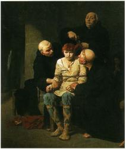

MACLASSE.COM

La dynastie mérovingienne est attribuée à Clovis en raison de l'importance de son règne dans l'Histoire. Le terme mérovingien provient pourtant de Mérovée, grand-père de Clovis, et est attribué à tous leurs descendants qui deviendront roi par la suite.
A la mort de Clovis en 511, le royaume est divisé entre ses quatre fils. Clodomir, Childeber, Clotaire de son mariage avec Clotilde et Thierry d'une précédente union.
Quelques rois réussiront à réunifier le royaume de Clovis pendant de courtes périodes(Clotaire Ier, Clotaire II, Dagobert Ier), mais les nombreux affrontements entre rois francs font apparaître plusieurs royaumes distincts : l'Austrasie, la Neustrie, la Bourgogne et l'Aquitaine, royaumes souvent en conflit les uns contre les autres.
A partir de 639, en raison du jeune âge des héritiers lors de leur accès au trône et de la fragilité de certains rois mérovingiens, les maires du palais (sorte de premier ministre de l'époque) vont assurer la gérance du royaume et prendre peu à peu le pouvoir. Dès lors, les rois en place vont être surnommés les rois fainéants, car ils se contentaient de siéger sur le trône alors que le maire du palais décidait de la politique à mener.
Les rois fainéants. Le roi devait se contenter de son titre, de siéger sur son trône, la chevelure et la barbe pendante, de transmettre les ordres qu'on lui avait dictés. Il ne possédait qu'un très petit domaine, avec une maison et quelques serviteurs, peu nombreux. Quand il se déplaçait, il montait dans une voiture attelée à des bœufs. Toutes les décisions étaient prises par le maire du palais.
D'après Eginhard, Vie de Charlemagne, IXe siècle.
En 714, Charles Martel devient maire du palais et commence à agrandir le royaume franc.
Charles Martel repousse l'invasion arabe à Poitiers en 732.
La bataille de Poitiers Les Arabes franchirent les montagnes et s'avancèrent dans le pays des Francs. Charles Martel leur fit front. Pendant sept jours, les deux armées se préparèrent au combat. Ensuite, les Francs se battirent et massacrèrent les Arabes à coups d'épée. La nuit mit fin au combat. Le lendemain, les Francs se préparèrent à combattre encore. Ils virent le camp immense des Arabes et découvrirent que les tentes étaient toutes vides. En silence, pendant la nuit, les Arabes étaient repartis chez eux.
D'après un texte arabe anonyme, XIVe siècle.
Cette victoire renforce le pouvoir de Charles Martel, maître incontesté du royaume franc. A la mort du roi Thierry IV, il ne lui nomme pas de successeur, assurant lui-même la gérance du pays sans pour autant posséder le titre de roi.
A sa disparition en 741, son fils Pépin devient à son tour maire du palais, mais il dépose le dernier roi mérovingien, Childéric III, et se fait sacrer roi des Francs en 751, brisant ainsi la dynastie mérovingienne.
Les descendants de Clovis qui deviennent roi appartiennent à la dynastie mérovingienne. Le royaume de Clovis est divisé en trois à sa mort et les rois mérovingiens seront souvent en conflit entre eux. Ils vont perdre de leur pouvoir au profit du maire du palais, et seront surnommés les rois fainéants. Charles Martel, maire du palais, repousse l'invasion arabe à Poitiers en 732 et devient très puissant. Son fils Pépin-le-Bref devient roi ce qui met fin à la dynastie des Mérovingiens en 751.


Mentions légales / Qui sommes-nous ? / Plan du site
Nos matières : français - mathématiques - histoire - sciences - arts visuels